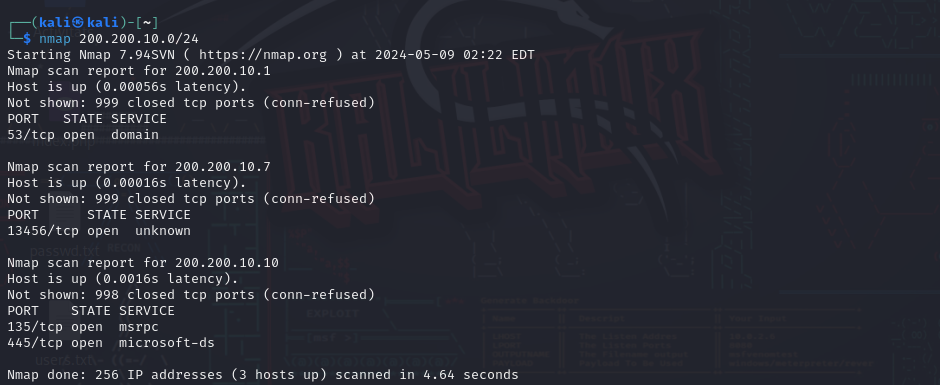
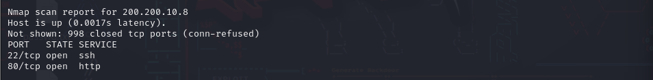

Nmap
Nmap
Nmap o Network Mapper es una de las herramientas más utilizadas en el mundo del hacking, ya que permite realizar exploraciones de redes y auditorías de seguridad. Nmap es una herramienta de código abierto creada por el equipo del mismo nombre. Está escrita en su mayoría por lenguaje C, C++ y Lua (https://nmap.org/). Su funcionalidad más interesante es la del escaneo masivo de dispositivos en una red, junto a los servicios, sistemas operativos y cortafuegos que utilizan. Nmap también cuenta con decenas de opciones para personalizar el escaneo de dispositivos ( -A para detectar versiones, sistemas operativos, puertos, etc. -sL para detectar objetivos…).
Para poder escanear máquinas virtuales (CTF) en la red, utilizaremos nmap [IP de red / CIDR]
Normalmente saldrán varias IPs, y un listado de puertos abiertos por cada una de estas. Los puertos más comunes, y que pueden indicar la presencia de una máquina virtual CTF, son el puerto 22 de TCP (SSH) para conectarse remotamente; y 80 de TCP (HTTP) por alguna página web que se está hospedando en la máquina destino.
